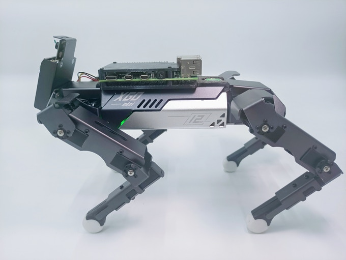

XGO-Mini is a desktop-sized AI quadruped robot with 12 degrees of freedom which can achieve omnidirectional movement, six-dimensional posture control, stable posture, and a variety of motions.

Equipped with a 9-axis IMU, its joint position sensor and electric current sensor is able to reflect to its own posture and joint rotation angle and torque, which are used for algorithms verification and exploitation, and can be programmed by computer to alert poison words and python programming. It is designed for education, research, algorithm verification, and entertainment.

XGO-Mini has fully functional AI modules which can facilitate both entry and advanced-level AI applications. The Al modules come with the features of visual recognition, voice recognition, and gesture recognition giving XGO-Mini the ability to hear, recognize and reply to users like a real dog. It also can track multiple colors and recognize QR codes, April Tag, and DataMatrix, etc. Through different programming, it can achieve more functions beyond your imagination.

Mask Detection
Gesture Recognition
Object Analysis
AI Chip
XGO-Mini’s AI module has a built-in Kendryte K210 Chip, featuring RISC-V processor architecture, audio-visual, standalone IP core, and strong programmability. It supports images, audio, video, machine learning models, and other types of materials stored in a Micro SD card.
XGO Team has collaborated with Canaan by using its Kendryte K210 Chip, the most powerful edge computing chip, designs for both visual and semantic recognition, widely used in various scenarios. Canaan is a leading provider of supercomputing solutions, distinguished for superior cost-efficiencies and performance.
12 Degrees of Freedom
Based on inverse kinematics, XGO-Mini’s 12 active joints enable it to move forward, backward, left, and right and support omnidirectional movement and the superposition of motion in multiple directions.
More about the joints
XGO-Mini, as a quadruped robot, can mimic the motion of a dog walking and has certain advantages like walking on uneven terrain and extremely rough surfaces. It can even adapt to avoid obstacles by adjusting its height. With its unique bionic system, XGO Mini can perform any dynamic movement.

XGO’s joints are composed of DC motors, reduction gears, sensors, and control circuits, with a servo control PID algorithm system. Subverts the traditional steering gear without closed-loop function, 360° angle controllable, angle recognition accuracy 0.088 degrees, with built-in acceleration, start and stop function, making mechanized actions smooth and realistic (Design By Luwu Intelligence, Made By Feetech)
Self-stabilization
Built-in IMUs capture XGO-Mini movement data and generate a highly flexible & stable motion performance. Through the posture data obtained by the IMU, closed-loop control allows XGO-Mini to adapt to external forces, adjust to the target posture of the manual action, and enable the teaching function.

When its feet are not moving, the motion control of six degrees of freedom of the body can be actualized. It has unprecedented mobility which coordinates all instinctive and sophisticated movements.
One-button Design
XGO-Mini comes as an assembled kit, so it’s ready to be used. With its one-button design and exclusive app, you can interact with XGO-Mini right away with ease. With the Edge Computing Chip, AI can run on local systems and can be controlled without the Internet and mobile.

App Control
Open-source and DIY Your XGO-Mini
XGO-Mini allows users to program it with Python and we also supply ROS packages run on Ubuntu or Raspberry for developers. Everyone can create their own functions for XGO-Mini for education, entertainment, and commercial use. Unlimited programming possibilities help you to explore, learn, and have fun. If XGO-Mini is not enough for you, we will provide you an advanced version, XGO-Ultra.
